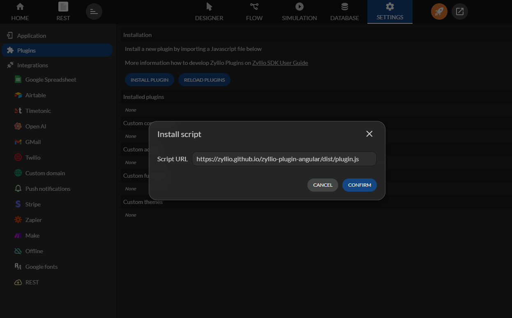
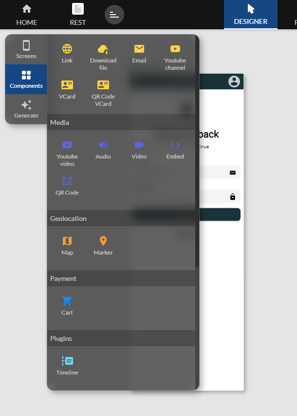

Plugins
Zyllio offre la possibilité d'étendre et de personnaliser son interface et ses fonctionnalités via des plugins.
Ces plugins sont développés en utilisant un SDK disponible sur GitHub.
Le développement des plugins repose principalement sur le langage TypeScript, Il s'agit d'une surcouche de JavaScript qui ajoute un système de typage statique. Le SDK de Zyllio supporte pleinement TypeScript, permettant ainsi aux développeurs d'écrire du code plus structuré et sécurisé tout en profitant des avantages du typage fort
Le SDK GitHub de Zyllio fournit également de la documentation, des exemples de code, ainsi que des outils pour tester et déboguer les plugins en cours de développement. Les développeurs peuvent cloner le dépôt GitHub, explorer les exemples fournis, et les adapter selon leurs besoins pour construire rapidement des plugins fonctionnels
Les plugins peuvent inclure différents types de composants personnalisés :
- Composant visuel : une interface ou élément visuel à afficher.
- Action : une fonction déclenchée par un utilisateur.
- Formule : une fonction personnalisée pour calculs ou automatisations.
- Thème : une personnalisation de l'apparence globale de l'application (couleurs, polices, etc.).
Prérequis pour le développement des plugins
- Connaissance en JavaScript/TypeScript.
- Accès au SDK Zyllio sur GitHub: https://github.com/zyllio/zyllio-sdk
- Outils de développement comme Node.js pour le développement en JavaScript/TypeScript.
Installation d'un plugin dans Zyllio
Une fois le développement du plugin terminé, vous devez l'installer dans Zyllio via l'interface dédiée dans les paramètres de l'application

Après l'installation du plugin, il est important de cliquer sur le bouton "RELOAD PLUGINS" afin que le système prenne en compte les nouvelles modifications et active correctement votre plugin.

Utiliser votre plugin
Selon la nature du Plugin, vous trouverez votre composant, votre action ou votre formule dans une section Plugins. Ces nouveaux éléments se manipule comme tout élément natifs Zyllio

Les plugins s’installe au niveau d’une application Zyllio. Chaque application peut disposer de ses propres Plugins